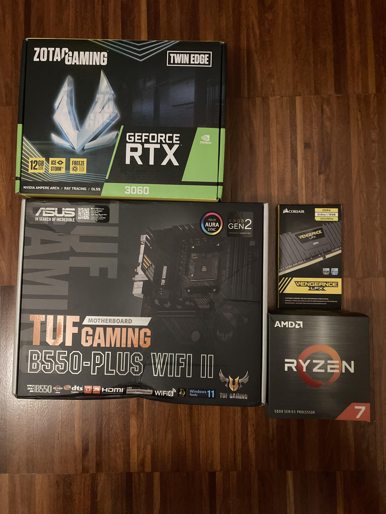

nome: Matteo Maiullari
età: 16 anni
classe e scuola: 3B INFO del Maxwell
età di nascità: 18/01/2008
residenza: Nichelino
Sono Cresciuto a Nichelino nel quartiere Oltrestazione e mi sono trasfrito nel 2022 nel quartiere Kennedy
Sono una persona molto tranquilla e gentile tranne con chi mi manca di rispetto.
ho 3 passioni:- informatica e PC- Animali- Corse e motori
Sono bravo logicamente, capisco bene l'inglese e so assemblare un PC
ho imparato bene l'inglese usando youtube e altri social già da bambino e ragazzo e ho imparato ad assemblare PC quando a marzo 2023 mi sono convinto che ne volevo uno e ho visto molti tuorial e video argomentativi sull'assemblaggio e le componenti
Vorrei diventare un game developer o, se non dovessi riuscirci, altri lavori nel campo dell'informatica.
"Ci vorrà tempo, modo e persino coniugazione".
Un immagine che mi rappresenta:
